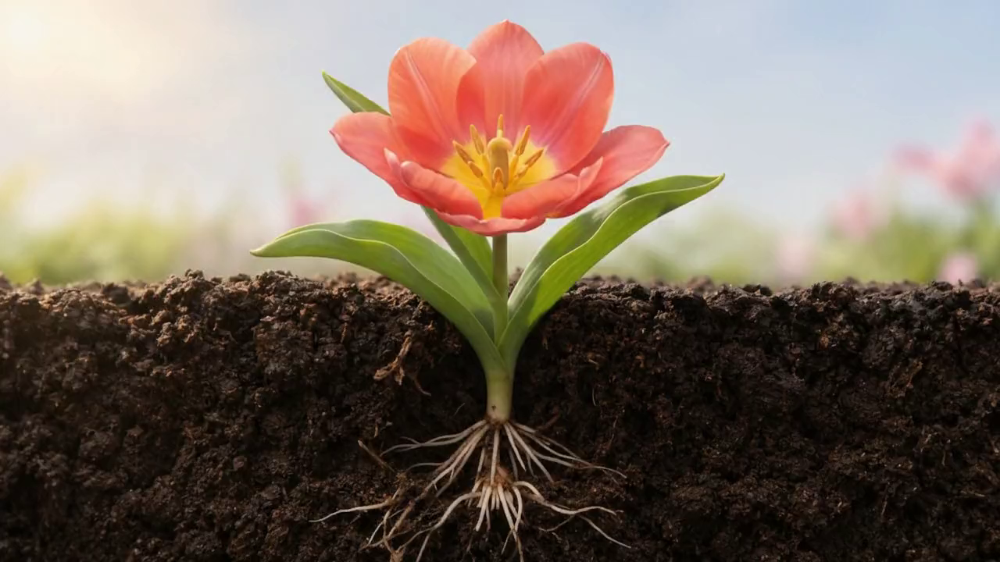

Good things
take growing.
A little bulb. A little patience.
A whole lot of spring.

A little bulb. A little patience.
A whole lot of spring.
Meet Bloom. A fictional spring bulb subscription for the windowsill dreamers, the balcony gardeners, and anyone who could use something to look forward to.
Your next season, imagined.
Coral tulips, a planting-depth guide, and a small journal for watching things change. This is a design concept, not a product for sale. No orders, payments, or personal details are collected.
A fictional subscription. A real reason to slow down.
Built following “Codex + Kling = $15K Animated Website” by Harnoor Singh (Singh in USA), guides 08 / 14: choose a reference, create START and END frames, generate the transition, connect video progress to scroll, then iterate.
Our reference is an AI-generated botanical composition. AI-generated start and end references were created with ChatGPT image generation. Gemini Veo generated the growth motion from the start image in a new, owner-authorized chat. This interface offered no last-frame control, so the end reference guided the concept rather than constraining the final frame. ffmpeg encodes the resulting film as all-keyframe H.264 for responsive, reversible scroll scrubbing. The still chapters are extracted from that same film.
Illustrative growth, not a botanical time scale. Reduced-motion preferences are respected. Type: Figtree, licensed under the SIL Open Font License.